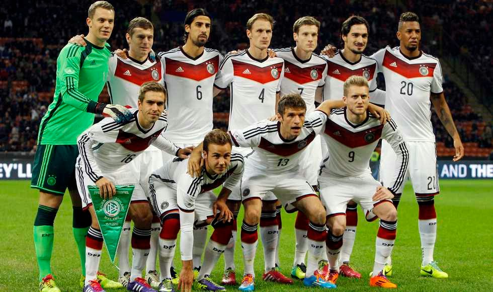
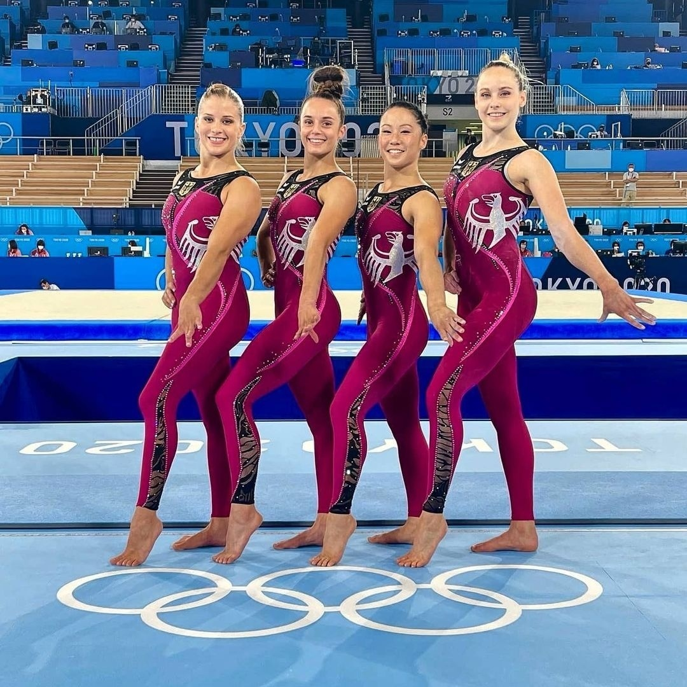
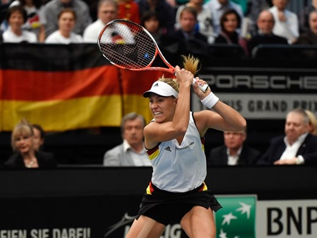

Os três esportes mais populares e influentes na Alemanha, considerando tanto a prática quanto o impacto cultural, são:
O futebol na Alemanha é uma paixão nacional, liderado pela Bundesliga e pela Copa da Alemanha (DFB-Pokal). O cenário de clubes é dominado pelo gigante Bayern de Munique, seguido de perto por forças como Borussia Dortmund e Bayer Leverkusen, todos conhecidos por suas torcidas apaixonadas e estádios lotados. No cenário internacional, a seleção alemã (Die Mannschaft) é uma das maiores potências da história do esporte, somando quatro Copas do Mundo e três Eurocopas, e atualmente se prepara para o Mundial de 2026.

A ginástica na Alemanha revolucionou a Educação Física moderna por meio do método Turnen, criado por Friedrich Ludwig Jahn no século XIX com o objetivo de fortalecer a juventude, unificar o país e preparar a população militarmente contra invasões estrangeiras. Esse sistema de treinamento coletivo e disciplinado introduziu aparelhos icônicos — como as barras paralelas e a barra fixa —, foi o primeiro modelo pedagógico e militar inserido oficialmente nas escolas e forças armadas do Brasil por imigrantes alemães e, hoje, mantém seu legado de vanguarda na ginástica olímpica moderna, liderando inclusive debates globais sobre o bem-estar e o respeito às atletas.

O tênis é um dos esportes mais tradicionais e democratizados da Alemanha, impulsionado pela Federação Alemã de Tênis (DTB) — a maior do mundo em número de associados — e por uma forte cultura de clubes locais acessíveis. Após viver sua era de ouro na década de 1990 com as lendas Steffi Graf e Boris Becker, o país se mantém como potência global no circuito atual com estrelas como Alexander Zverev e Angelique Kerber, além de sediar torneios de grande prestígio internacional em quadras de saibro e grama, como os de Hamburgo, Halle e Stuttgart.
